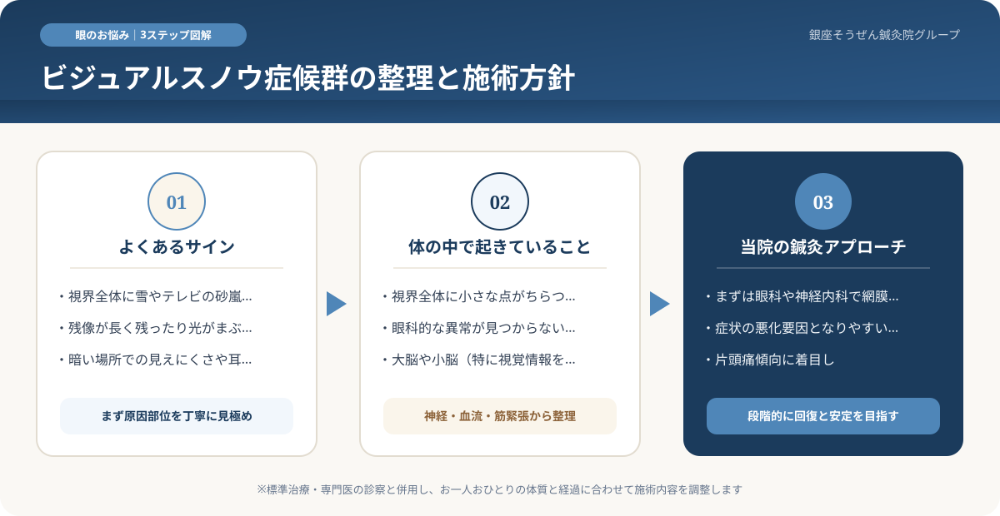
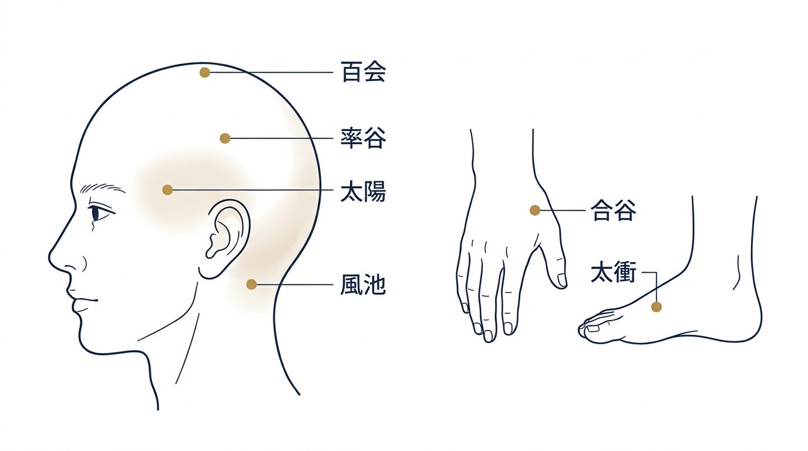

ビジュアルスノウ症候群の鍼灸
視界全体に雪や砂嵐のように見える神経系の病態です。医療機関での精査を前提に、自律神経や首肩の緊張ケアを行います。
まず知っておきたい要点と改善の流れ

視界全体に小さな点がちらつく「視界砂嵐症候群」とも呼ばれる状態です。眼科的な異常が見つからないことが多く、大脳や小脳（特に視覚情報を処理する視覚連合野）の代謝亢進や、神経伝達物質の不均衡が関与する神経系の病態と考えられています。片頭痛との関連も指摘されており、残像（視覚保続）、光過敏、夜盲症、耳鳴りなどを伴うことがあります。
このようなお悩みはありませんか？
- ✓視界全体に雪やテレビの砂嵐のような点が見える
- ✓残像が長く残ったり光がまぶしく感じたりする
- ✓暗い場所での見えにくさや耳鳴りを伴うことがある
- ✓眼科検査では異常がないと言われ対策に悩んでいる
当院の施術アプローチ・改善の流れ
なぜ鍼灸で改善へ向かうのか？（作用機序の図解）
ビジュアルスノウ症候群に対する鍼灸は、後頸部〜眼周囲の微小循環と毛様体筋・自律神経調整機序を通じて、お体本来の回復力を引き出します。

眼球周囲の危険な深刺しを避け、風池・天柱・合谷・太衝など安全な経穴へ繊細に施術します。
PC・スマホ作業や緊張で固まった首深層筋と眼輪筋周囲の血流を促し、重だるさを軽減します。
交感神経優位による目の乾き・ピント調節疲労を鎮め、涙液分泌とリラックス反応を助けます。
眼科の点眼・定期検査を最優先としつつ、日々の眼精疲労や頭痛・肩こりの連鎖を整えます。
院長YouTube解説・関連動画
症状を、吹雪の中で目を開けているようであると表現する人もいる
ビジュアルスノウ症候群の症状は、視野全体に雪が降っている時の風景やテレビ画面のホワイトノイズのようなものが認められることです。視野全体に砂を撒き散らしたように見え、視界がかすんで見えにくくなるのです。
さらに、耳鳴りや光過敏や視覚保続、眼内現象の増強、夜間視力障害などの症状も現れることがあります。ビジュアルスノウ症候群を発症している人の訴える症状は、見え方以外は非常に様々で人によって違うのです。
視野全体が砂を撒き散らしたようになる症状を、吹雪の中で目を開けているようであると表現する人もおり、発症するまでのような日常生活を送ることが難しくなります。
ビジュアルスノウ症候群は、視覚に関連した複数の症状を持つ神経学的障害です。この症候群は、視覚的な雪やテレビの受信不良のようなノイズを伴う持続的な視覚障害を中心に、多くの付随する症状を持っています。以下にVSSの主な症状を説明します。
1. 視覚的な雪:この症候群の名前の由来となっている主要な症状です。明るい背景や暗い背景のいずれでも、テレビの静電ノイズのような絶え間ない小さな点の動きを見ることがあります。
2. 残像:物を見てから目を移動した後も、その物の薄い像が視界に残る現象です。特に明るい背景に対して暗い物体を見た後や、逆に暗い背景に対して明るい物体を見た後に顕著になることがあります。
3. 光の尾:明るい光源を見たとき、光が動くとその後ろに尾のようなものがついて見えます。
4. 光の過敏症:通常は問題ないような光の強さが、非常にまぶしく感じることがあります。
5. 夜盲症:暗闇での視覚が低下することです。特に夜間運転が難しくなることがあります。
6. 視覚的なパルス:一定のリズムで視界が明るくなったり暗くなったりする現象のことです。
7. 浮遊物体:通常の目の浮遊物体よりも、さらに多くの浮遊物体を感じることがあります。
8. 色の変化:一部では、色の知覚が変わることを報告しています。例えば、一部の色が特に鮮明に見える、あるいは逆に褪せて見えることがあります。
9. ハロやスターバースト:光源の周りにハロ（光の輪）やスターバースト（放射状の光）を見ることがあります。
10. 視覚の振動:物体が微細に振動しているかのように見えることです。
これらの症状は、人によって異なる強度や組み合わせで現れます。一部ではある症状に非常に敏感で、他の症状はそれほど気にならないこともあります。また、これらの症状は日常生活に様々な影響を及ぼすことがあり、ストレスや不安を増大させることもあります。
ビジュアルスノウ症候群の症状は非常に特異的であり、他の神経学的または眼科的な病気とは異なる特徴を持っています。
ビジュアルスノウ症候群の改善方法は、薬です。現在主に使われている薬は、神経作用を鎮める効果のある薬や偏頭痛を改善するための薬です。
ビジュアルスノウ症候群は、まだあまり知られていない病気でもあるため、症状が病気によって起こっているということを説明することも大事です。病気であるとわかることで、病気や症状と向き合うことができるのです。
ビジュアルスノウ症候群の最近の研究では、大脳や小脳の限られた部位に代謝亢進領域が認められることが分かってきたため、今後、この代謝の変化を改善させる薬などのが開発されることで、改善方法が確立されると考えられます。
ビジュアルスノウ症候群は症状の特異性や原因が完全には解明されていません。そのため改善方法に関して、特定の方法が確立されているわけではありません。しかし、現在の臨床実践や研究に基づき、いくつかのアプローチが試みられています。以下にアプローチについて説明します。
1. 薬
抗てんかん薬: 一部でには、ランピリンやトピラマートなどの抗てんかん薬が有効であると報告されています。これらの薬は神経の活動を調整する効果があり、VSSの症状を和らげることが期待されます。
抗うつ薬: 一部では、セルトラリンやフルオキセチンなどの抗うつ薬が有効であると報告されています。これらの薬は神経伝達物質のバランスを調整する効果があります。
カルシウムチャネル拮抗薬: ニフェジピンなどのカルシウムチャネル拮抗薬も一部の人によって試みられています。
2. 生活習慣の変更
ストレス管理: VSSの症状はストレスや不安によって悪化することが報告されているため、リラクゼーションや瞑想、ヨガなどのストレス管理の技法が推奨されます。
睡眠の質の向上: 良好な睡眠は神経系の回復に役立つため、睡眠の質の向上が求められます。
3. 視覚へのアプローチ
特定の視覚的な訓練やエクササイズが、VSSの症状を軽減するのに有効であるとの報告が一部にあります。
4. サプリメントや代替法
一部では、マグネシウムやリポ酸、コエンザイムQ10などのサプリメントの摂取により、症状の改善を経験しています。また、アキュパンクチャやカイロプラクティックなどの代替法も試みられています。
5. カウンセリングや心理的サポート
VSSは、日常生活や心の健康に影響を与える可能性があるため、心理的サポートやカウンセリングが推奨されます。
6. サポートグループ
VSSを発症した人同士が経験や情報を共有するサポートグループの参加は、症状の管理や心理的なサポートに役立つことがあります。
7. 研究参加
新しい改善方法の開発やVSSに関する研究が進行中であり、臨床試験への参加は新しい改善方法へのアクセスや症状の管理に寄与することが期待されます。
VSSの改善方法は個々の症状や体質に合わせてカスタマイズされるべきものであり、一つの方法が全ての人に適しているわけではありません。医師や専門家との密接なコミュニケーションをとりながら、最も効果的な組み合わせを見つけることが重要です。
ビジュアルスノウ症候群の改善の一環として使用される薬に関して説明します。
1. 抗てんかん薬
種類: ラモトリギン（Lamotrigine）、トピラマート（Topiramate）など
適応する人: VSSの症状を伴うてんかんがある場合や、特定の神経学的な異常を持つ場合
目的: 脳内の興奮性の神経伝達を調節し、視覚の乱れを減少させること
効果: 一部で症状の軽減が報告されているが、全ての人に効果的ではない可能性がある。
2. 抗うつ薬:
種類: クロナゼパム（Clonazepam）、アミトリプチリン（Amitriptyline）など
適応する人: VSSと併発する不安やうつ症状を持つ場合
目的: 神経伝達のバランスを修正し、視覚の乱れや関連する心的症状を改善すること
効果: VSSの症状や関連する心的症状の軽減が期待される。
3. β-ブロッカー:
種類: プロプラノロール（Propranolol）など
適応する人: VSSに関連する偏頭痛を持つ場合
目的: 血管の拡張や収縮を正常化し、偏頭痛の発作を減少させること
効果: 偏頭痛の頻度や強度の低下が期待されるが、VSSの直接的な症状に対する効果は不明瞭。
4. カルシウムチャネルブロッカー:
種類: ニフェジピン（Nifedipine）など
適応する人: 高血圧や心血管疾患を持つVSSの場合
目的: 脳内のカルシウム流入を調節し、血管の拡張や収縮を正常化すること
効果: VSSに関連する症状の軽減や心血管疾患の症状の管理が期待される。
ビジュアルスノウ症候群の症状や原因は個人によってに異なるため、これらの薬も全ての人に有効とは限りません改善方法の選択や変更は医師の指導のもと行われるべきです。また、薬での改善以外にも、生活習慣の改善やストレス管理など、多岐にわたるオプションが考慮されることがあります。
ビジュアルスノウ症候群は、珍しい病気です。眼科で調べても特に異常は見つかりません。さらにまだあまり知られていない病気で医師の認知度も低く、ビジュアルスノウ症候群という病気であると判断されるまで時間がかかることもあります。
突然症状が現れるため、日常生活を送る上で大きな影響が出ます。病気によって症状が現れているとわかるまでは、大きな不安を抱えることになります。
日常生活を送る上で支障が出ることのストレスや原因がわからない不安によって精神的にも疲れてしまうことが多いです。
片頭痛・緊張型・群発・連日性頭痛のツボ図解
実際の施術ではお一人おひとりの体質・症状に合わせて選穴しますが、片頭痛・緊張型頭痛・群発頭痛・慢性連日性頭痛の予防・鎮静ケアの臨床でよく用いられる代表的なツボの目安です。

📌 代表的なツボの詳細一覧表を開く（6穴） ▼
| ツボ名 | 位置の目安 | 主な狙い | セルフケアの注意点 |
|---|---|---|---|
| 百会（ひゃくえ） | 頭頂部の中央 | 頭全体の重だるさ・自律神経の過敏鎮静 | 突発的な激しい頭痛は直ちに脳神経外科を受診してください。 |
| 率谷（そっこく） | 耳の一番上から指2本分上の側頭部 | 片頭痛のズキズキ感・側頭筋の過緊張緩和 | 拍動性頭痛の発作中は強く揉まず静かに冷やすか遠隔穴を使います。 |
| 太陽（たいよう） | こめかみのくぼみ | こめかみの痛み・眼精疲労由来の頭痛ケア | 指の腹で優しく圧迫してゆっくり離します。 |
| 風池（ふうち） | 後頭部の生え際のくぼみ | 緊張型頭痛・後頭部痛・大後頭神経の緊張緩和 | デスクワークの合間の首ケアに非常に有効です。 |
| 合谷（ごうこく） | 手の甲、親指と人差し指の間 | 三叉神経領域の痛みを遠隔から鎮める国際標準穴 | 片頭痛の予兆を感じたときにも安全に押せます。 |
| 太衝（たいしょう） | 足の甲、親指と人差し指の骨の間 | ストレス・気圧変化・月経関連の頭痛予防サポート | 頭痛専門医の予防薬治療と並行して継続します。 |
国際査読論文の科学的エビデンス
国際的な医学データベース（PubMed・Cochrane等）で報告されている片頭痛・緊張型頭痛・群発頭痛・慢性連日性頭痛の予防・鎮静ケア領域の代表的な査読済み鍼灸研究をまとめています（標準治療との併用や研究上の限界を含めて正確に掲載）。
📚 査読論文データ・PubMed出典リンクを開く（4件） ▼
| 年・研究デザイン | 対象・規模 | 主な結果 | 限界・出典 |
|---|---|---|---|
| 2024年 メタ解析 | ドライアイ 16試験（n=1,383：人工涙液併用） | BUT（SMD 1.25, P<0.0001）、シルマー試験（SMD 1.55, P<0.0001）、角膜染色・総有効率（OR 4.09）が有意改善。 | 自覚症状OSDIは有意差なし（P=0.15）。人工涙液との併用評価。 Medicine (PMID: 38181299) |
| 2019年 二重盲検RCT | ドライアイ 49名（米国・6か月追跡） | 実鍼群はOSDIスコアが1週〜6か月まで有意改善（6か月p<0.01）、乾燥感・充血も有意軽減。 | 小規模・客観的涙液指標（TBUT等）は有意差なし。 Clin Ophthalmol (PMID: 31114151) |
| 2020年 Cochraneレビュー | 緑内障・高眼圧症 3 RCTs（n=137） | 一時的な眼圧低下の報告はあるが8週時点で差消失、視力は有意差なし。 | 全試験が高バイアス・確実性非常に低。点眼治療の代替不可。 Cochrane (PMID: 32032457) |
| 2025年 メタ解析 | 変性眼疾患 21研究（緑内障・黄斑変性等） | 総有効率はOR 3.52（p<0.00001）だが、統合視力（p=0.50）・眼圧（p=0.11）に有意差なし。 | 非ランダム化研究含む。眼科標準管理下での補完研究段階。 Complement Ther Med (PMID: 40850524) |
参考文献・出典
- 2024年 メタ解析（ドライアイ 16試験（n=1,383：人工涙液併用））— Medicine (PMID: 38181299)
- 2019年 二重盲検RCT（ドライアイ 49名（米国・6か月追跡））— Clin Ophthalmol (PMID: 31114151)
- 2020年 Cochraneレビュー（緑内障・高眼圧症 3 RCTs（n=137））— Cochrane (PMID: 32032457)
- 2025年 メタ解析（変性眼疾患 21研究（緑内障・黄斑変性等））— Complement Ther Med (PMID: 40850524)
よくある質問（FAQ）
Q. 眼科で異常なしと言われましたが鍼灸で相談できますか？▼
Q. 薬物療法と並行して鍼灸を受けられますか？▼
あわせて読まれる関連疾患（眼のお悩み）
片眼の外傷や手術後に健常眼にも自己免疫性炎症が生じる重篤疾患です。眼科治療最優先で安定期の補完ケアを支えます。
先天的に虹彩が欠如・低形成となる指定難病です。眼科での合併症管理と遮光対策を最優先に、安定期の眼精疲労や首肩の負担を和らげます。
黄斑部に血漿成分が漏れ出し嚢胞状のむくみが生じる病気です。眼科での標準治療を最優先に、安定期の疲労・体調を支えます。
白目やまぶた裏の粘膜が炎症を起こす病気です。感染性は眼科受診を最優先に、アレルギー性の体質・免疫バランスを整えます。
角膜にアミロイドが沈着し強いまぶしさや異物感が生じる指定難病です。眼科治療最優先で安定期の疲労や首肩こりを支えます。
遺伝性に黄斑部の視機能が低下する指定難病の総称です。眼科専門医での管理を最優先に、安定期の眼精疲労や首肩こりをケアします。
CLINICAL RECOVERY CASES
✨ 実際の臨床改善事例・回復経過を見る
銀座本院をはじめ各院での実際の改善事例を症状別に絞り込んでご確認いただけます。
おひとりで悩まず、まずはご相談ください
銀座本院・川口・大宮・横浜・博多・田無の各院でご予約を承っております。